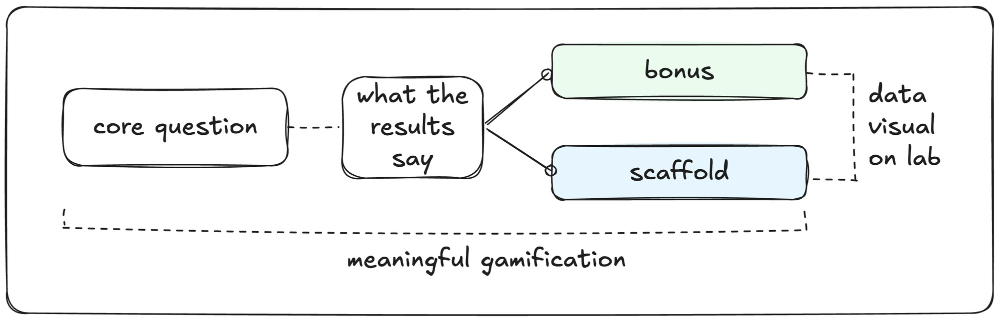

NOTE 03 · THE FORKED PATHWAY
JUMP Math Lab
A student finishes the core questions, and what happens next is decided by what they just did. This note stays with that one decision and shows how it was made.
CHARACTER SHEETREMOTE · BILBAO & TORONTO · 2024–2025
CLASSEdTech Specialist & eLearning Developer
QUESTThe JUMP Math Lab template, its UI patterns, accessibility features and the forked pathway, and the teacher dashboard over three rounds of Figma prototypes. Also Making Math Click on Coursera and the five-course professional learning site.
TEAMContent leads and developers across Canada and Spain.
DESIGN ITERATIONS · 3 ROUNDS
How the teacher dashboard changed
Three rounds of Figma prototypes, from a teacher survey and usage data. The question each round had to answer: can a teacher read this and know what to do next lesson?
- ROUND 1CountsRaw counts of activity.
- ROUND 2ProgressProgress through the work.
- ROUND 3 ✓DecisionsDecisions a teacher can act on in class.

TWO PLAYERS
Two people, one decision
When a student finishes the core questions…
P1 · THE TEACHERI want to know whether to challenge or support them next,so that I don’t waste their time on questions they’re not ready for, or bore them with ones they’ve already shown they know.
P2 · THE STUDENTI want the next questions to match what I actually know,so that I don’t feel punished for struggling or bored by repetition.
THE FORK · CORE QUESTIONS, THEN TWO WAYS ON
The route is chosen by the student’s own results, and the teacher sees which one opened. The decision is made at the point the evidence exists, so a teacher reads a result and acts on it before the next lesson.

SKETCHED FIRST · ROUGH WORKThe fork, first sketch ▸

ROUGH WORK · BEHIND THIS NOTEFLIP TO THE ROUGH WORK ▸
STAGES CLEARED · 6/6
Where I worked across the lifecycle
- 01 · DISCOVER ✓
- Teacher survey
- Usage patterns
- 02 · PROTOTYPE ✓
- Figma dashboard mocks
- Three rounds
- 03 · PILOT ✓
- Forked pathways
- Check-in quizzes
- 04 · VALIDATE ✓
- Teacher feedback on shipped screens
- 05 · BUILD ✓BEYOND THE BRIEF
- xAPI?XAPIA data standard that records what learners do inside a course, so dashboards can use it. data spec
- Needs versus wants for developers
- 06 · MEASURE ✓BEYOND THE BRIEF
- Diagnostic, formative?FORMATIVEChecks that happen during learning, to adjust teaching. Summative checks measure what was learned at the end. and summative views
From a teacher survey to xAPI data the dashboards read.